전기기사 (2007-08-05 기출문제)
1과목: 전기자기학
1. 유전율 ε, 투자율 μ인 매질 내에서 전자파의 전파속도는?
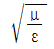
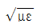
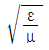
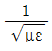
(정답률: 77%)

2. 정자계 현상에 대하여 전류에 의한 자계에 관하여 성립하지 않는 식은? (단, H는 자계, B는 자속밀도, A는 자계의 벡터포텐셜, μ는 투자율, i는 전류밀도이다.)
- H=1/μ rot A
- rot A=-μi
- div B=0
- rot H=i
(정답률: 54%)
3. 단위길이당 정전용량 및 인덕턴스가 각각 0.2[μF/m], 0.5[mH/m]인 전송선의 특성임피던스는 몇 [Ω]인가?
- 50
- 75
- 125
- 150
(정답률: 75%)
4. E=2i＋j＋4k[V/m]인 전계가 존재할 때 10-5[C]의 전하를 원점으로부터 r=4i＋j＋2k[m]까지 움직이는데 필요한 일은 몇 [J]인가?
- 1.7×10-4
- 2.0×10-4
- 2.4×10-4
- 2.7×10-4
(정답률: 41%)
5. 자극의 세기 m[Wb]의 정자극이 반지름 a[m]인 원형코일 축상에 그림과 같이 놓여 있을 때, 이 정자극을 d1[m]되는 점에서 d2[m]되는 점까지 t초 동안에 이동시켰다면 코일 내에 유기되는 기전력은 몇 [V]로 표시 되는가?
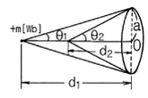
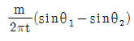
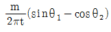
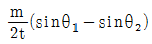
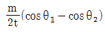
(정답률: 44%)
6. 간격이 4[㎝]인 2개의 평행한 도선에 각각 10[kA]의 전류가 흐르고 있을 때 도선의 단위길이당 힘은 몇 [N/m]인가?
- 400
- 500
- 600
- 700
(정답률: 65%)
7. 단면적 S, 평균반지름 r, 권선수 N인 토로이드 코일에 누설자속이 없는 경우, 자기인덕턴스의 크기는?
- 권선수의 자승에 비례하고 단면적에 반비례한다.
- 권선수 및 단면적에 비례한다.
- 권선수의 자승 및 단면적에 비례한다.
- 권선수의 자승 및 평균 반지름에 비례한다.
(정답률: 73%)
8. 절연내력 3000[kV/m]인 공기 중에 놓여진 직경 1[m]의 구도체에 줄 수 있는 최대전하는 몇 [C]인가?
- 6.75×104
- 6.75×10-16
- 8.33×10-5
- 8.33×10-6
(정답률: 60%)
9. 유전률이 9인 유전체내 전계의 100[V/m]일 때 유전체 내에 저장되는 에너지 밀도는 몇[J/m3]인가?
- 5.5×102
- 4.5×104
- 9×104
- 4.5×105
(정답률: 63%)
10. 그림과 같은 모양의 자화곡선을 나타내는 자성체 막대를 충분히 강한 평등자계 중에서 매분 3000회 회전시킬 때 자성체는 단위체적당 매초 약 몇 [kcal]의 열이 발생하는가? (단, Br=2[Wb/m2], HL=500[AT/m], B=μH에서 μ는 일정하지 않음)
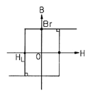
- 11.7
- 47.6
- 70.2
- 200
(정답률: 56%)
11. 내원통의 반지름 a, 외원통의 반지름 b인 동축원통 콘덴서의 내외 원통사이에 공기를 넣었을 때 정전용량이 C0이었다. 내외 반지름을 모두 3배로 하고 공기 대신 비유전율 9인 유전체를 넣었을 경우의 정전용량은?
- C0/9
- C0/3
- C0
- 9C0
(정답률: 67%)
12. 접지된 구도체와 정전하간에 작용하는 힘은?
- 항상 흡인력이다.
- 항상 반발력이다.
- 조건적 흡인력이다.
- 조건적 반발력이다.
(정답률: 80%)
13. 도체계에서 임의의 도체를 일정전위(영전위)의 도체로 완전 포위하면 내외공간의 전계를 완전 차단할 수 있다. 이것을 무엇이라 하는가?
- 표피 효과
- 핀치 효과
- 전자차폐
- 정전차폐
(정답률: 62%)
14. 대지면에 높이 h로 평해하게 가설된 매우 긴 선전하가 지면으로부터 받는 힘은?
- h2에 비례한다
- h2에 반비례한다.
- h에 비례한다.
- h에 반비례 한다.
(정답률: 68%)
15. 자유공간에 있어서 포인팅 벡터를 S[W/m2]라 할 때 전장의 세기의 실효값 Ee[V/m]를 구하면?
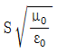
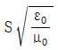
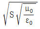
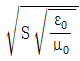
(정답률: 60%)
16. 길이 l[m], 단면적의 반지름 a[m]인 원통이 길이방향으로 균일하게 자화되어 자화의 세기가 J[Wb/m2]인 경우, 원통 양단에서의 전자극의 세기 m[Wb]은?
- J
- 2πJ
- πa2J
- J/(πa2)
(정답률: 73%)
17. 자기회로와 전기회로의 대응 관계가 잘못된 것은?
- 투자율 – 도전율
- 자속밀도 - 전속밀도
- 퍼미언스 – 컨덕턴스
- 기자력 - 기전력
(정답률: 49%)
18. 자기회로에서 투자율, 단면적 및 길이를 각각 1/2로 하면 자기저항은 몇 배로 되는가?
- 1/2
- 2
- 4
- 8
(정답률: 57%)
19. 지구는 태양으로부터 P[kW/m2]의 방사열을 받고 있다. 지구 표면에서의 전계의 세기는 몇[V/m]인가?
- 377P
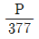
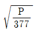
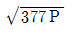
(정답률: 58%)
20. 유전율이 서로 다른 두 유전체가 서로 경계면을 이루면서 접해있는 경우 전속 및 전기력선은 작은 유전율을 가진 유전체에서 큰 유전체로 입사할 때 굴절각은 입사각에 비하여 어떻게 되는가?
- 감소한다.
- 불변한다.
- 증가한다.
- 90°증가한다.
(정답률: 59%)
2과목: 전력공학
21. 다음 중 고속도 재투입용 차단기의 표준 동작책무표기로 가장 옳은 것은? (단, t는 임의의 시간 간격으로 재투입하는 시간을 말하며, 0은 차단동작, C는 투입동작, C0는 투입 동작에 계속하여 차단동작을 하는 것을 말함)(오류 신고가 접수된 문제입니다. 반드시 정답과 해설을 확인하시기 바랍니다.)
- 0 - 1분 - C0
- C0 - 15초 - C0
- C0 - 1분 - C0 - t초 - C0
- 0 - t초 - C0 - 1분 - C0
(정답률: 47%)
22. 3상 3선식 송전선이 있다. 1선당의 저항은 8[Ω], 리액턴스는 12[Ω]이며, 수전단의 전력이 1000[kW], 전압이 10[kV], 역률이 0.8일 때 이 송전선의 전압강하를 몇 [%]인가?
- 14
- 15
- 17
- 19
(정답률: 49%)
23. 다음 중 코로나 손실에 대한 설명으로 옳은 것은?
- 전선의 대지전압의 제곱에 비례한다.
- 상대공기밀도에 비례한다.
- 전원주파수의 제곱에 비례한다.
- 전선의 대지전압과 코로나 임계전압의 차의 제곱에 비례한다.
(정답률: 47%)
24. 원자력발전소에서 비등수형 원자로에 대한 설명으로 옳지 않은 것은?
- 연료로 농축 우라늄을 사용한다.
- 감속재로 헬륨 액체금속을 사용한다.
- 냉각재로 경수를 사용한다.
- 물을 노내에서 직접 비등시킨다.
(정답률: 57%)
25. 모선전압이 6600[V]인 변전소에서 저항 6[Ω], 리액턴스 8[Ω]의 송전선을 통해서 역률 0.8의 부하에 급전할 때 부하점 전압을 6000[V]로 하면 몇 [kW]의 전력이 전송되는가?
- 300
- 400
- 500
- 600
(정답률: 34%)
26. 그림은 랭킨사이클을 나타내는 T-S(온도-엔트로피) 선도이다. 여기에서 A2-B의 과정은 화력 발전소의 어떤 과정에 해당되는가?
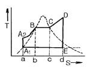
- 급수펌프내의 등적단열압축
- 보일러 내에서의 등압가열
- 보일러 내에서의 증기의 등압등온수열
- 급수펌프에 의한 단열팽창
(정답률: 43%)
27. 수력발전설비에서 흡출관을 사용하는 목적은?
- 압력을 줄이기 위하여
- 물의 유선을 일정하게 하기 위하여
- 속도변동률을 적게 하기 위하여
- 낙차를 늘리기 위하여
(정답률: 68%)
28. 송전선의 특성임피던스는 저항과 누설콘덕턴스를 무시하면 어떻게 표시되는가? (단, L은 선로의 인덕턴스, C는 선로의 정전용량이다.)
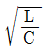
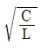
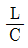
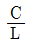
(정답률: 76%)
29. 그림과 같이 평지에서 동일 장력으로 가설된 두 경간의 이도가 각각 4[m], 9[m]이다. 지금 중앙의 지지점에서 전선이 풀어졌을 경우 지표상의 최저 높이는 약 몇[m]인가? (단, 지지점의 높이는 16[m]라 하고 전선의 신장은 무시하는 것으로 한다.)
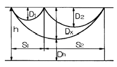
- 2.43
- 2.77
- 3.45
- 3.86
(정답률: 36%)
30. 정격전압 154[kV], 1선의 유도리액턴스가 10[Ω]인 3상 3선식 송전선로에서 154[kV], 100[MVA]기준으로 환산한 이 선로의 리액턴스는 약 몇[%]인가?
- 1.41
- 2.16
- 4.22
- 6.48
(정답률: 58%)
31. 다음 중 모선보호용 계전기로 사용하면 가장 유리한 것은?
- 재폐로계전기
- 옴형계전기
- 역상계전기
- 차동계전기
(정답률: 57%)
32. 다음 중 이상 전압에 대한 방호장치가 아닌 것은?
- 병렬 콘덴서
- 가공지선
- 피뢰기
- 서지흡수기
(정답률: 65%)
33. 각 수용가의 수용설비용량이 50[kW], 100[kW], 80[kW], 60[kW], 150[kW]이며, 각각의 수용률이 0.6, 0.6, 0.5, 0.5, 0.4일 때 부하들의 부등률이 1.3 이라면 변압기 용량은 약 몇 [kVA]가 필요한가? (단, 평균 부하역률은 80[%]라고 한다.)
- 142
- 165
- 183
- 212
(정답률: 67%)
34. 배전계통을 구성할 때 저압 뱅킹 배전방식의 캐스케이딩(cascading)현상이란?
- 전압 동요가 적은 현상
- 변압기의 부하 배분이 불균일한 현상
- 저압선이나 변압기에 고장이 생기면 자동적으로 고장이 제거되는 현상
- 저압선의 고장에 의하여 건전한 변압기의 일부 또는 전부가 회로로부터 차단되는 현상
(정답률: 75%)
35. 공통 중성선 다중접지 3상 4선식 배전선로에서 고압측(1차측) 중성선과 저압측(2차측) 중성선을 전기적으로 연결하는 주목적은?
- 저압측의 단락사고를 검출하기 위함
- 저압측의 접지사고를 검출하기 위함
- 주상변압기의 중성선측 붓싱(bushing)을 생략하기 위함
- 고저압 혼촉 시 수용가에 침입하는 상승전압을 억제하기 위함
(정답률: 72%)
36. 다음 중 플리커 경감을 위한 전력 공급측의 방안이 아닌 것은?
- 단락 용량이 큰 계통에서 공급한다.
- 공급전압을 낮춘다.
- 전용 변압기로 공급한다.
- 단독 공급 계통을 구성한다.
(정답률: 67%)
37. 송배전 선로는 저항 R, 인덕턴스 L, 정전용량(커패시턴스)C, 누설콘덕턴스 g라는 4개의 정수로 이루어진 연속된 전기회로이다. 이들 정수를 선로정수(Line Constant)라고 부르는데 이것은( ① ), ( ② )등에 따라 정해진다. 다음 중 ( ① ), ( ② )에 알맞은 내용은?
- ① 전압, 전선의 종류, ② 역률
- ① 전선의 굵기, 전압, ② 전류
- ① 전선의 배치, 전선의 종류, ② 전류
- ① 전선의 종류, 전선의 굵기, ② 전선의 배치
(정답률: 55%)
38. 아래의 충격파형은 직격뇌에 의한 파형이다. 여기에서 Tf와 Tt는 무엇을 표시한 것인가?
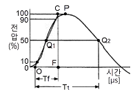
- Tf=파고값, Tt=파미 길이
- Tf=파두 길이, Tt=충격파 길이
- Tf=파미 길이, Tt=충격반파 길이
- Tf=파두 길이, Tt=파미길이
(정답률: 59%)
39. 다음 중 전동기 등 기계 기구류 내의 전로의 절연 불량으로 인한 감전사고를 방지하기 위한 방법으로 거리가 먼 것은?
- 외함 접지
- 저 전압 사용
- 퓨즈 설치
- 누전 차단기 설치
(정답률: 56%)
40. 선로 고장발생시 타 보호기기와의 협조에 의해 고장 구간을 신속히 개방하는 자동구간 개폐기로서 고장전류를 차단할 수 없어 차단 기능이 있는 후비보호장치와 직렬로 설치되어야 하는 배전용 개폐기는?
- 배전용 차단기
- 부하 개폐기
- 컷아웃 스위치
- 섹셔널라이저
(정답률: 71%)
3과목: 전기기기
41. 직류 분권 발전기를 병렬운전을 하기 위해서는 발전기용량 P와 정격전압 V는?
- P는 임의 V는 같아야 한다.
- P와 V가 임의
- P는 같고, V는 임의
- P와 V가 모두 같아야 한다.
(정답률: 67%)
42. 극수 8, 중권직류기의 전기자 총 도체수 960, 매극자속 0.04[Wb], 회전수 400[rpm]이라면 유기 기전력은 몇 [V]인가?
- 625
- 425
- 327
- 256
(정답률: 59%)
43. 직류 분권 발전기의 전기자 저항이 0.⑤[Ω]이다. 단자 전압이 200[V], 회전수 1500[rpm]일 때 전기자 전류가 100[A]이다. 이것을 전동기로 사용하여 전기자 전류와 단자전압이 같을 때 회전속도는 약 몇 [rpm]인가? (단, 전기자 반작용은 무시한다.)
- 1427
- 1577
- 1620
- 1800
(정답률: 46%)
44. 2대의 동기 발전기가 병렬 운전하고 있을 때 동기화 전류가 흐르는 경우는?
- 기전력의 크기에 차가 있을 때
- 기전력의 위상에 차가 있을 때
- 기전력의 파형에 차가 있을 때
- 부하 분담에 차가 있을 때
(정답률: 68%)
45. 동기발전기의 권선을 분포권으로 하면?
- 집중권에 비하여 합성유도 기전력이 높아진다.
- 권선의 리액턴스가 커진다.
- 파형이 좋아진다.
- 난조를 방지한다.
(정답률: 65%)
46. 단상 전파 정류회로에서 저항부하일 때의 맥동률 [%]은 약 얼마인가?
- 0.45
- 0.17
- 17
- 48
(정답률: 53%)
47. 단상 변압기의 임피던스 왓트(impedance watt)를 구하기 위하여는 어느 시험이 필요한가?
- 무부하시험
- 단락시험
- 유도시험
- 반환부하법
(정답률: 59%)
48. 단상변압기를 병렬 운전하는 경우 각 변압기의 부하 분담이 변압기의 용량에 비례하려면 각각의 변압기의 %임피던스는 어느 것에 해당 되는가?
- 변압기 용량에 비례하여야 한다.
- 변압기 용량에 반비례하여야 한다.
- 변압기 용량에 관계없이 같아야 한다.
- 어떠한 값이라도 좋다.
(정답률: 53%)
49. 변압기의 임피던스 전압이란?
- 정격 전류 시 2차측 단자전압이다.
- 변압기의 1차를 단락, 1차에 1차 정격전류와 같은 전류를 흐르게 하는데 필요한 1차 전압이다.
- 정격 전류가 흐를 때의 변압기 내의 전압 강하이다.
- 변압기의 2차를 단락, 2차에 2차 전격전류와 같은 전류를 흐르게 하는데 필요한 2차 전압이다.
(정답률: 66%)
50. 3상 유도전동기의 원선도를 그리면 등가 회로의 정수를 구할 때 몇 가지 시험이 필요하다. 그 시험이 아닌 것은?
- 무부하시험
- 구속시험
- 고정자권선의 저항 측정시험
- 슬립 측정시험
(정답률: 51%)
51. 권선형 유도 전동기와 직류 분권 전동기와의 유사한 점으로 가장 옳은 것은?
- 정류자가 있고, 저항으로 속도조정을 할 수 있다.
- 속도 변동률이 크고, 토크가 전류에 비례한다.
- 속도가 가변이고, 기동토크가 기동전류에 비례한다.
- 속도 변동률이 적고, 저항으로 속도조정을 할 수 있다.
(정답률: 58%)
52. 50[Hz]로 설계된 3상 유도 전동기를 60[Hz]에 사용하는 경우 단자 전압을 110%로 올려서 사용하면 지장 없이 사용할 수 있다. 이 중에서 옳지 않은 것은?
- 최대 토크가 8% 증가
- 여자 전류 감소
- 출력이 일정하면 유효전류는 감소
- 철손은 거의 불변
(정답률: 49%)
53. 변압기의 내부 고장 보호용으로 가장 널리 쓰이는 계전기는?
- 거리 계전기
- 과전류 계전기
- 차동 계전기
- 방향 단락 계전기
(정답률: 62%)
54. 3상 배전선에 접속된 V결선의 변압기에서 전부하시의 출력을 100[kVA]라 하며 같은 용량의 변압기 한대를 증설하여 △ 결선 하였을 때의 정격출력은 몇 [kVA]인가?
- 50
- 50√3
- 100
- 100√3
(정답률: 63%)
55. 단상 반발전동기의 회전방향을 변경하려면?
- 전원의 2선을 바꾼다.
- 브러시의 위치 조정을 한다.
- 주권선의 2선을 바꾼다.
- 브러시의 접속선을 바꾼다.
(정답률: 51%)
56. 동기전동기의 여자전류를 증가하면 어떤 현상이 발생하는가?
- 전기자 전류의 위상이 앞선다.
- 난조가 생긴다.
- 토크가 증가한다.
- 앞선 무효전류가 흐르고 유도 기전력은 높아진다.
(정답률: 40%)
57. 변압기의 여자 어드미턴스를 구하는 시험법은?
- 단락시험
- 무부하시험
- 부하시험
- 충격전압시험
(정답률: 62%)
58. 다음 농형 유도전동기에 주로 사용되는 속도 제어법은?
- 극수 제어법
- 2차 여자 제어법
- 2차 저항 제어법
- 종속 제어법
(정답률: 67%)
59. 단락비가 1.2인 발전기의 퍼센트 동기 임피던스[%]는 약 얼마인가?
- 100
- 83
- 60
- 45
(정답률: 69%)
60. 다음 기기 중 입력전압과 위상이 다른 전압을 얻고자 할 때 쓰이는 기기는?
- 3상 유도전압조정기
- 단상 유도전압 조정기
- V결선의 변압기
- T결선의 변압기
(정답률: 45%)
4과목: 회로이론 및 제어공학
61. 그림의 대칭 T회로의 일반 4단자 정수가 다음과 같다. A=D=1.2, B=44[Ω], C=0.01[℧]일 때, 임피던스 Z[Ω]의 값은?
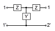
- 1.2
- 12
- 20
- 44
(정답률: 48%)
62. 그림과 같은 R-C 병렬회로에서 전원전압이 e(t)=3e-5t인 경우 이 회로의 임피던스는?
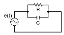
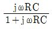
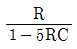
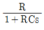
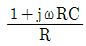
(정답률: 56%)
63. 비정현파 전류 i(t)=56sinωt＋25sin2ωt＋30 sin(3ωt＋30)＋40sin(4ωt＋60)로 주어질 때 왜형율은 약 얼마인가?
- 1.4
- 1.0
- 0.5
- 0.1
(정답률: 62%)
64. 그림과 같은 성형 평형부하가 선간 전압 220[V]의 대칭 3상 전원에 접속되어 있다. 이 접속선 중에 한선이 X점에서 단선 되었다고 하면 이 단선점 X의 양단에 나타나는 전압은 몇 [V]인가? (단, 전원전압은 변화하지 않는 것으로 한다.)
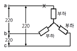
- 110
- 110√3
- 220
- 220√3
(정답률: 35%)
65. 라플라스 함수 F(s)=(4s＋16)/(s2＋8s＋20)에 대한 시간함수는?
- 4e-4tcos2t
- e-4tcos2t
- e-4tsin4t
- 4e-tsin4t
(정답률: 53%)
66. 단위 길이당 직렬임피던스 및 병렬 어드미턴스가 각각 Z 및 Y인 전송 선로의 전파 정수 r는?
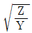
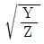
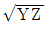
- YZ
(정답률: 52%)
67. 그림과 같은 회로의 전달함수는? (단, T1=R2C, T2=(R1＋R2)C이다.)
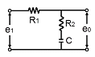
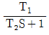
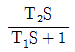
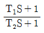
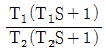
(정답률: 51%)
68. 성형 결선의 부하가 있다. 선간 전압이 300[V]의 3상 교류를 인가했을 때 선 전류가 40[A] 그 역률이 0.8이라면 리액턴스는 약 몇[Ω]인가?
- 5.73
- 4.33
- 3.46
- 2.59
(정답률: 40%)
69. 그림과 같은 직류 LC 직렬회로에 대한 설명 중 옳은 것은?
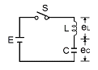
- eL은 진동함수이나 ec는 진동하지 않는다.
- eL의 최대치는 2E까지 될 수 있다.
- eᴄ의 최대치가 2E까지 될 수 있다.
- C의 충전전하 q는 시간 t에 무관하다.
(정답률: 51%)
70. C[F]의 콘덴서에 V[V]의 직류 전압을 인가 시 축적되는 에너지는 몇[J]인가?
- (CV2)/2
- (C2V2)/2
- 2CV2
- 0
(정답률: 67%)
71. 다음 논리회로의 출력 X0는?
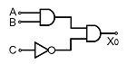
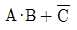
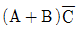
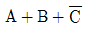
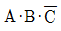
(정답률: 61%)
72. 보드 선도의 이득 교차점에서 위상각 선도가 -180°축의 상부에 있을 때 이 계의 안정 여부는?
- 불안정하다
- 판정 불능이다.
- 임계 안정이다.
- 안정하다
(정답률: 61%)
73. "계의 이득 여유는 보드 선도에서 위상곡선이 ( )의 점에서의 이득값이 된다." ( ) 안에 알맞은 것은?
- 90°
- 120°
- -90°
- -180°
(정답률: 65%)
74. 다음의 미분 방정식을 신호 흐름 선도에 바르게 나타낸 것은? (단, c(t)=X1(t), X2(t)=d/(dt)·X1(t)로 표시한다.)
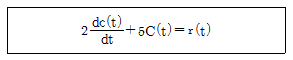
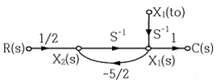
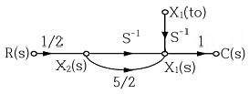
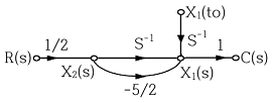
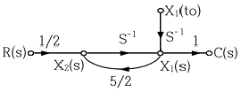
(정답률: 46%)
75. 보상기에서 원래 시스템에 극점을 첨가하면 일어나는 현상은?
- 시스템의 안정도가 감소된다.
- 시스템의 과도응답시간이 짧아진다.
- 근궤적을 S-평면의 왼쪽으로 옮겨준다.
- 안정도와는 무관하다.
(정답률: 34%)
76. 안정한 제어계에 임펄스 응답을 가했을 때 제어계의 정상 상태 출력은?
- ＋의 일정한 값
- -의 일정한 값
- 0
- ＋∞ 또는 -∞
(정답률: 56%)
77. 특성 방정식이 s5＋s4＋4s3＋3s2＋Ks＋1=0인 제어계가 안정하기 위한 K의 범위는?
- 0 ＜ K ＜ 4
- (5-√5)/2 ＜ K ＜ (5＋√5)/2
- 0 ＜ K ＜ (5＋√5)/2
- (5-√5)/2 ＜ K ＜ 4
(정답률: 37%)
78. 의 고유값은?
- -2, -5
- -1, -4
- 1, 4
- 2, 5
(정답률: 60%)
79. 다음 과도응답에 관한 설명 중 옳지 않은 것은?
- 지연 시간은 응답이 최초로 목표값의 50%가 되는데 소요되는 시간이다.
- 백분율 오버슈트는 최종 목표값과 최대 오버슈트와의 비를 %로 나타낸 것이다.
- 감쇠비는 최종 목표값과 최대 오버슈트와의 비를 나타낸 것이다.
- 응답시간은 응답이 요구하는 오차 이내로 정착되는데 걸리는 시간이다.
(정답률: 58%)
80. 다음과 같이 정의된 신호를 z 변환하면?
- 1
- 1/(1＋z-1)
- 1/(1-z-1)
- 1/z
(정답률: 45%)
5과목: 전기설비기술기준 및 판단기준
81. 변전소에서 154[kV], 용량 2100[kVA] 변압기를 옥외에 시설할 때 취급자 이외의 사람이 들어가지 않도록 시설하는 울타리는 울타리의 높이와 울타리에서 충전부분까지의 거리의 합계를 몇 [m]이상으로 하여야 하는가?
- 5
- 5.5
- 6
- 6.5
(정답률: 58%)
82. 사용전압이 380[V]인 옥내배선을 애자사용공사로 시설할 때 전선과 조영재사이의 이격거리는 몇[㎝] 이상이어야 하는가?
- 2
- 2.5
- 4.5
- 6
(정답률: 46%)
83. 어떤 공장에서 케이블을 사용하는 사용전압이 22[kV]인 가공전선을 건물 옆쪽에서 1차 접근상태로 시설하는 경우, 케이블과 건물의 조영재 이격거리는 몇[㎝] 이상이어야 하는가?
- 50
- 80
- 100
- 120
(정답률: 24%)
84. 저압 옥상 전선로에 시설하는 전선은 인장강도 2.30[kN]이상의 것 또는 지름이 몇 [㎜]이상의 경동선 이어야 하는가?
- 1.6
- 2.0
- 2.6
- 3.2
(정답률: 53%)
85. 다음 중 고압 보안공사에 사용되는 전선의 기준으로 옳은 것은?
- 케이블인 경우 이외에는 인장강도 8.01[kN]이상의 것 또는 지름 5[㎜] 이상의 경동선일 것
- 케이블인 경우 이외에는 인장강도 8.01[kN]이상의 것 또는 지름 4[㎜] 이상의 경동선일 것
- 케이블인 경우 이외에는 인장강도 8.71[kN]이상의 것 또는 지름 5[㎜] 이상의 경동선일 것
- 케이블인 경우 이외에는 인장강도 8.71[kN]이상의 것 또는 지름 4[㎜] 이상의 경동선 일 것
(정답률: 37%)
86. 송유풍냉식 특별고압용 변압기의 송풍기에 고장이 생긴 경우에 대비하여 시설하여야 하는 보호장치는?
- 경보장치
- 과전류 측정장치
- 온도측정장치
- 속도 조정장치
(정답률: 58%)
87. 전력보안 통신설비는 가공 전선로로부터의 어떤 작용에 의하여 사라에게 위험을 줄 우려가 없도록 시설하여야 하는가?
- 정전유도작용 또는 전자유도작용
- 표피작용 또는 부식작용
- 부식작용 또는 정전유도작용
- 전압강하작용 또는 전자유도작용
(정답률: 68%)
88. 정격전류가 15[A]l하인 과전류차단기로 보호하는 저압 옥내 전로에 접속하는 콘센트는 정격전류가 몇 [A]이하인가?
- 15
- 20
- 25
- 30
(정답률: 58%)
89. 고압전로 또는 특별고압전로와 저압전로를 결합하는 변압기의저압측의 중성점의 접지공사는?(관련 규정 개정전 문제로 여기서는 기존 정답인 2번을 누르면 정답 처리됩니다. 자세한 내용은 해설을 참고하세요.)
- 제1종 접지공사
- 제2종 접지공사
- 제3종 접지공사
- 특별제3종 접지공사
(정답률: 49%)
90. 다음 중 제2종 특별고압 보안공사의 기준으로 옳지 않은 것은?
- 특별고압 가공전선은 연선일 것
- 지지물로 사용하는 목주의 풍압하중에 대한 안전율은 2이상일 것
- 지지물이 목주일 경우 그 경간은 100[m]이하 일 것
- 지지물이 A종 철주일 경우 그 경간은 150[m] 이하일 것
(정답률: 26%)
91. 사용전압 50000[V]인 특별고압 가공전선과 저압 가공전선을 동일 지지물에 시설하는 경우에 특별고압 가공전선으로 경동연선을 사용한다면 그 단면적은 몇 [mm2] 이상이어야 하는가?(관련 규정 개정전 문제로 여기서는 기존 정답인 3번을 누르면 정답 처리됩니다. 자세한 내용은 해설을 참고하세요.)
- 22
- 38
- 55
- 80
(정답률: 53%)
92. 다음 중 피뢰기를 설치하지 않아도 되는 곳은?
- 발전소, 변전소의 가공전선 인입구 및 인출구
- 가공전선로의 말구 부분
- 가공전선로에 접속한 1차측 전압이 35[kV]이하인 배전용 변압기의 고압측 및 특별고압측
- 고압 및 특별고압 가공전선로로부터 공급을 받는 수용장소의 인입구
(정답률: 49%)
93. 가공전선로의 지지물에 취급자가 오르고 내리는데 사용하는 발판 볼트 등은 원칙적으로 지표상 몇 [m] 미만에 시설하여서는 아니 되는가?
- 1.2
- 1.5
- 1.8
- 2.0
(정답률: 65%)
94. 다음 중 폭연성 분진이 많은 장소의 저압 옥내배선에 적합한 배선공사방법은?
- 금속관 공사
- 애자사용 공사
- 합성수지관 공사
- 가요전선관 공사
(정답률: 61%)
95. 주상변압기 전로의 절연내력을 시험 할 때 최대 사용전압이 23000[V] 권선으로서 중성점 접지식 전로(중성선을 가지는 것으로서 그중성선에 다중접지를 한 것)에 접속하는 것의 시험전압으로 알맞은 것은?
- 16560[V]
- 21160[V]
- 25300[V]
- 28750[V]
(정답률: 55%)
96. 전기설비기술기준상의 용어의 정의에서 전력계통의 운용에 관한 지시를 하는 곳은?
- 변전소
- 개폐소
- 발전소
- 급전소
(정답률: 58%)
97. 사무실 건물의 조명설비에 사용되는 백열전등 또는 방전등에 전기를 공급하는 옥내전로의 대지전압은 몇 [V] 이하이어야 하는가?
- 250
- 300
- 350
- 400
(정답률: 65%)
98. 다음 중 사용전압이 3500[V]를 넘고 100000[V]미만인 특별 고압 가공전선과 저압 또는 고압 가공전선을 동일 지지물에 시설할 수 있는 조건으로 옳지 않은 것은?
- 특별고압 가공전선로는 제2종 특별고압 보안공사에 의한다.
- 특별고압 가공전선과 고압 또는 저압가공전선과의 이격거리는 0.8[m] 이상으로 한다.
- 특별고압 가공전선은 케이블인 경우를 제외하고 인장강도 21.67[kN]이상의 연선 또는 단면적이 55[mm2]인 경동연선을 사용한다.
- 특별고압 가공전선로의 지지물은 철주, 철근콘크리트주 또는 철탑이어야 한다.
(정답률: 44%)
99. 다음 중 옥내에 시설하는 저압 전선으로 나전선을 사용할 수 있는 배선공사는?
- 합성수지관공사
- 금속관 공사
- 버스 덕트공사
- 플로어 덕트공사
(정답률: 45%)
100. 강제 배류기의 시설기준에 대한 설명으로 옳지 않은 것은?
- 귀선에서는 강제배류기를 거쳐 금속제 지중 관로로 통하는 전류를 저지하는 구조로 할 것
- 강제 배류기를 보호하기 위하여 적정한 과전류 차단기를 시설할 것
- 강제 배류기용 전원장치의 변압기는 절연변압기를 시설하고 1,2 차측 전로에는 개폐기 및 과전류차단기를 각극에 시설한 것일 것
- 강제 배류기는 제3종 접지공사를 한 금속제 외함 기타 견고한 함에 넣어 시설하거나 사람이 접촉할 우려가 없도록 시설할 것
(정답률: 32%)